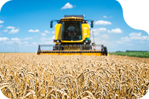
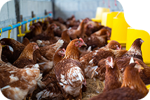
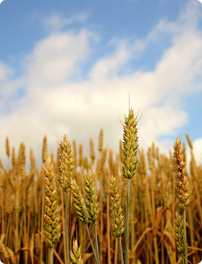

Agroton
one of the largest producers of agricultural products in Ukraine

Agroton is among the leaders in wheat production in Ukraine
We rank 4th in Ukraine in terms of wheat production, ensuring high quality grain thanks to modern technologies and fertile Ukrainian fields.

Agroton – number 1 in chicken production in Ukraine
We lead the chicken market in Ukraine, guaranteeing the highest quality products thanks to modern technologies and safety controls.
- 100%
- quality of production
- 50+
- modern agricultural technologies
- 1.5 mil. tons
- products we produce every year.
- 10+ countries
- we export products all over the world.
Agroton is the largest diversified vertically integrated agricultural producer in Eastern Ukraine. Agroton is a regional leader in the cultivation of agricultural crops, livestock farming

Agroton is 30 years of leadership in the agricultural sector. We cultivate 200,000+ hectares of land, supply the market with quality products and export to 10+ countries. Our mission is to develop agriculture, introduce innovations and provide people with natural products.
- №1
- in sunflower production in Ukraine
- №2
- in wheat production
- №3
- in grain elevator capacity in Luhansk region
- №4
- in poultry production in Luhansk region
- №5
- in milk production in Ukraine
- №6
- in bakery production in Luhansk